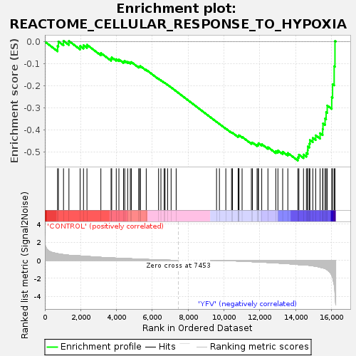
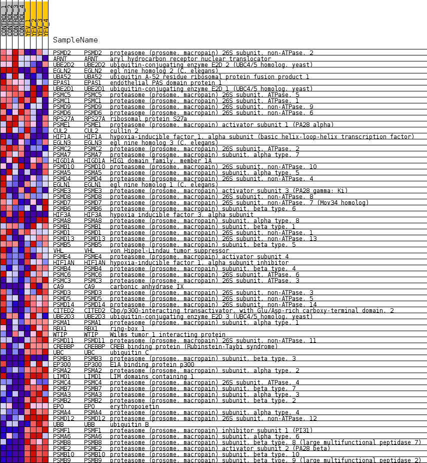
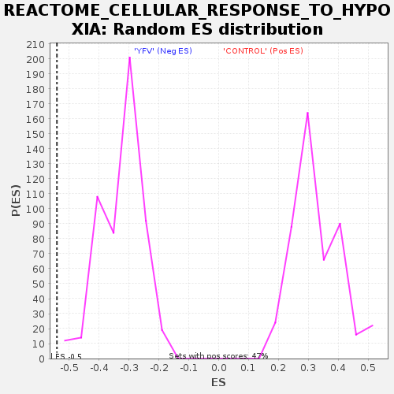

| Dataset | MATRIZ_GSE99081_collapsed_to_symbols.gsea_CLASE_99081.cls#CONTROL_versus_YFV |
| Phenotype | gsea_CLASE_99081.cls#CONTROL_versus_YFV |
| Upregulated in class | YFV |
| GeneSet | REACTOME_CELLULAR_RESPONSE_TO_HYPOXIA |
| Enrichment Score (ES) | -0.5405372 |
| Normalized Enrichment Score (NES) | -1.667841 |
| Nominal p-value | 0.0 |
| FDR q-value | 0.04320396 |
| FWER p-Value | 0.671 |

| SYMBOL | TITLE | RANK IN GENE LIST | RANK METRIC SCORE | RUNNING ES | CORE ENRICHMENT | |
|---|---|---|---|---|---|---|
| 1 | PSMD2 | proteasome (prosome, macropain) 26S subunit, non-ATPase, 2 | 711 | 0.738 | -0.0201 | No |
| 2 | ARNT | aryl hydrocarbon receptor nuclear translocator | 755 | 0.718 | 0.0005 | No |
| 3 | UBE2D2 | ubiquitin-conjugating enzyme E2D 2 (UBC4/5 homolog, yeast) | 1041 | 0.634 | 0.0034 | No |
| 4 | EGLN2 | egl nine homolog 2 (C. elegans) | 1344 | 0.561 | 0.0029 | No |
| 5 | UBA52 | ubiquitin A-52 residue ribosomal protein fusion product 1 | 1969 | 0.488 | -0.0199 | No |
| 6 | EPAS1 | endothelial PAS domain protein 1 | 2157 | 0.462 | -0.0165 | No |
| 7 | UBE2D1 | ubiquitin-conjugating enzyme E2D 1 (UBC4/5 homolog, yeast) | 2350 | 0.433 | -0.0143 | No |
| 8 | PSMC5 | proteasome (prosome, macropain) 26S subunit, ATPase, 5 | 3127 | 0.329 | -0.0517 | No |
| 9 | PSMC1 | proteasome (prosome, macropain) 26S subunit, ATPase, 1 | 3697 | 0.267 | -0.0782 | No |
| 10 | PSMD9 | proteasome (prosome, macropain) 26S subunit, non-ATPase, 9 | 3732 | 0.263 | -0.0718 | No |
| 11 | PSMD6 | proteasome (prosome, macropain) 26S subunit, non-ATPase, 6 | 3986 | 0.243 | -0.0796 | No |
| 12 | RPS27A | ribosomal protein S27a | 4134 | 0.232 | -0.0812 | No |
| 13 | PSME1 | proteasome (prosome, macropain) activator subunit 1 (PA28 alpha) | 4391 | 0.212 | -0.0901 | No |
| 14 | CUL2 | cullin 2 | 4460 | 0.206 | -0.0877 | No |
| 15 | HIF1A | hypoxia-inducible factor 1, alpha subunit (basic helix-loop-helix transcription factor) | 4624 | 0.189 | -0.0916 | No |
| 16 | EGLN3 | egl nine homolog 3 (C. elegans) | 4772 | 0.177 | -0.0950 | No |
| 17 | PSMC2 | proteasome (prosome, macropain) 26S subunit, ATPase, 2 | 4826 | 0.173 | -0.0926 | No |
| 18 | PSMA7 | proteasome (prosome, macropain) subunit, alpha type, 7 | 5238 | 0.134 | -0.1137 | No |
| 19 | HIGD1A | HIG1 domain family, member 1A | 5294 | 0.131 | -0.1129 | No |
| 20 | PSMD10 | proteasome (prosome, macropain) 26S subunit, non-ATPase, 10 | 5332 | 0.127 | -0.1110 | No |
| 21 | PSMA5 | proteasome (prosome, macropain) subunit, alpha type, 5 | 5659 | 0.102 | -0.1279 | No |
| 22 | PSMD4 | proteasome (prosome, macropain) 26S subunit, non-ATPase, 4 | 6348 | 0.049 | -0.1689 | No |
| 23 | EGLN1 | egl nine homolog 1 (C. elegans) | 6479 | 0.040 | -0.1756 | No |
| 24 | PSME3 | proteasome (prosome, macropain) activator subunit 3 (PA28 gamma; Ki) | 6661 | 0.029 | -0.1859 | No |
| 25 | PSMD8 | proteasome (prosome, macropain) 26S subunit, non-ATPase, 8 | 6710 | 0.026 | -0.1880 | No |
| 26 | PSMD7 | proteasome (prosome, macropain) 26S subunit, non-ATPase, 7 (Mov34 homolog) | 6854 | 0.018 | -0.1963 | No |
| 27 | PSMB6 | proteasome (prosome, macropain) subunit, beta type, 6 | 7048 | 0.008 | -0.2079 | No |
| 28 | HIF3A | hypoxia inducible factor 3, alpha subunit | 7330 | 0.000 | -0.2253 | No |
| 29 | PSMA8 | proteasome (prosome, macropain) subunit, alpha type, 8 | 9584 | -0.007 | -0.3644 | No |
| 30 | PSMB1 | proteasome (prosome, macropain) subunit, beta type, 1 | 9745 | -0.014 | -0.3739 | No |
| 31 | PSMD1 | proteasome (prosome, macropain) 26S subunit, non-ATPase, 1 | 10102 | -0.030 | -0.3949 | No |
| 32 | PSMD13 | proteasome (prosome, macropain) 26S subunit, non-ATPase, 13 | 10422 | -0.053 | -0.4129 | No |
| 33 | PSMB5 | proteasome (prosome, macropain) subunit, beta type, 5 | 10473 | -0.058 | -0.4141 | No |
| 34 | VHL | von Hippel-Lindau tumor suppressor | 10790 | -0.084 | -0.4309 | No |
| 35 | PSME4 | proteasome (prosome, macropain) activator subunit 4 | 10799 | -0.085 | -0.4287 | No |
| 36 | HIF1AN | hypoxia-inducible factor 1, alpha subunit inhibitor | 10814 | -0.086 | -0.4268 | No |
| 37 | PSMB4 | proteasome (prosome, macropain) subunit, beta type, 4 | 10839 | -0.088 | -0.4254 | No |
| 38 | PSMC6 | proteasome (prosome, macropain) 26S subunit, ATPase, 6 | 11010 | -0.102 | -0.4326 | No |
| 39 | PSMC3 | proteasome (prosome, macropain) 26S subunit, ATPase, 3 | 11528 | -0.149 | -0.4598 | No |
| 40 | CA9 | carbonic anhydrase IX | 11586 | -0.154 | -0.4583 | No |
| 41 | PSMD3 | proteasome (prosome, macropain) 26S subunit, non-ATPase, 3 | 11846 | -0.178 | -0.4685 | No |
| 42 | PSMD5 | proteasome (prosome, macropain) 26S subunit, non-ATPase, 5 | 11911 | -0.185 | -0.4665 | No |
| 43 | PSMD14 | proteasome (prosome, macropain) 26S subunit, non-ATPase, 14 | 11924 | -0.186 | -0.4612 | No |
| 44 | CITED2 | Cbp/p300-interacting transactivator, with Glu/Asp-rich carboxy-terminal domain, 2 | 12107 | -0.204 | -0.4659 | No |
| 45 | UBE2D3 | ubiquitin-conjugating enzyme E2D 3 (UBC4/5 homolog, yeast) | 12453 | -0.238 | -0.4795 | No |
| 46 | PSMA1 | proteasome (prosome, macropain) subunit, alpha type, 1 | 12891 | -0.287 | -0.4973 | No |
| 47 | RBX1 | ring-box 1 | 13011 | -0.302 | -0.4949 | No |
| 48 | WTIP | Wilms tumor 1 interacting protein | 13276 | -0.337 | -0.5003 | No |
| 49 | PSMD11 | proteasome (prosome, macropain) 26S subunit, non-ATPase, 11 | 13564 | -0.374 | -0.5059 | No |
| 50 | CREBBP | CREB binding protein (Rubinstein-Taybi syndrome) | 14125 | -0.467 | -0.5254 | Yes |
| 51 | UBC | ubiquitin C | 14182 | -0.479 | -0.5134 | Yes |
| 52 | PSMB3 | proteasome (prosome, macropain) subunit, beta type, 3 | 14438 | -0.500 | -0.5129 | Yes |
| 53 | EP300 | E1A binding protein p300 | 14599 | -0.516 | -0.5061 | Yes |
| 54 | PSMA2 | proteasome (prosome, macropain) subunit, alpha type, 2 | 14672 | -0.535 | -0.4933 | Yes |
| 55 | LIMD1 | LIM domains containing 1 | 14678 | -0.536 | -0.4762 | Yes |
| 56 | PSMC4 | proteasome (prosome, macropain) 26S subunit, ATPase, 4 | 14766 | -0.557 | -0.4635 | Yes |
| 57 | PSMB7 | proteasome (prosome, macropain) subunit, beta type, 7 | 14794 | -0.565 | -0.4469 | Yes |
| 58 | PSMA3 | proteasome (prosome, macropain) subunit, alpha type, 3 | 14958 | -0.609 | -0.4373 | Yes |
| 59 | PSMB2 | proteasome (prosome, macropain) subunit, beta type, 2 | 15120 | -0.662 | -0.4258 | Yes |
| 60 | EPO | erythropoietin | 15364 | -0.769 | -0.4159 | Yes |
| 61 | PSMA4 | proteasome (prosome, macropain) subunit, alpha type, 4 | 15508 | -0.833 | -0.3978 | Yes |
| 62 | PSMD12 | proteasome (prosome, macropain) 26S subunit, non-ATPase, 12 | 15525 | -0.844 | -0.3715 | Yes |
| 63 | UBB | ubiquitin B | 15642 | -0.918 | -0.3489 | Yes |
| 64 | PSMF1 | proteasome (prosome, macropain) inhibitor subunit 1 (PI31) | 15701 | -0.986 | -0.3206 | Yes |
| 65 | PSMA6 | proteasome (prosome, macropain) subunit, alpha type, 6 | 15762 | -1.053 | -0.2902 | Yes |
| 66 | PSMB8 | proteasome (prosome, macropain) subunit, beta type, 8 (large multifunctional peptidase 7) | 16014 | -1.655 | -0.2521 | Yes |
| 67 | PSME2 | proteasome (prosome, macropain) activator subunit 2 (PA28 beta) | 16061 | -1.905 | -0.1933 | Yes |
| 68 | PSMB10 | proteasome (prosome, macropain) subunit, beta type, 10 | 16150 | -2.694 | -0.1115 | Yes |
| 69 | PSMB9 | proteasome (prosome, macropain) subunit, beta type, 9 (large multifunctional peptidase 2) | 16195 | -3.614 | 0.0027 | Yes |

